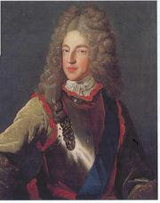
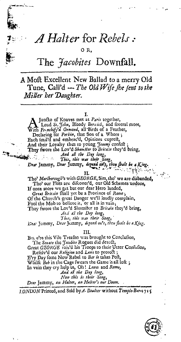
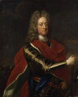
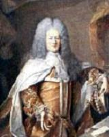
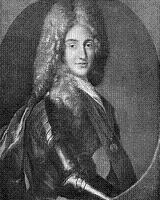
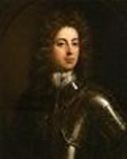

A Halter for Rebels
or The Jacobites Downfall
A Broadsite Ballad from the year 1715Followed by
In vain are the hopes of a Popish Pretender
Two Whig songs to the same tune
Tune - Mélodie"The Old Wife she sent to the Miller her Daughter" (1)
Sheet music- Partition
(Sequenced by Christian Souchon)

Jacques François Stuart, le Chevalier de Saint-Georges

Bodleian Ballads Catalogue: Harding B 3(67)
   
1° A Halter for Rebels
La corde pour les rebelles!

or THE JACOBITES' DOWNFALL
I
Loud St-John (3), Bloody Berwick (4) and several more
With frenchified Ormond (5), all birds of a feather
Declaring for Perkin (6), that son of a whore;
Each smiled and embraced, opinions expressed
And their loyalty to young Jemmy (7) confessed.
They swore the loved Shamster (8) to Britain they'd bring (9)
"And all the day long
This, this was their song
Dear Jemmy, dear Jemmy,
Depend on't, thou shalt be a king!"
Though our plots are discovered, our old schemes undone,
If once more we get but our dear hero landed,
Great Britain shall yet be a province of Rome (12).
Of the Church's great danger we'll loudly complain,
Fool the mob to believe it, or all is in vain."
They swore le loved Shamster to Britain they'd bring.
"And all the day long
This, this was their song
Dear Jemmy, dear Jemmy,
Depend on't, thou shalt be a king!"
The Senate the Jacobite rogues did detect,
Great George raised his troops to their utter confusion,
Resolved our religion and laws to protect.
Every day some new rebel to Bar le 13) takes post,
Whilst Bob in the cage (14) swears the game is all lost.
In vain they cry "Help us, Oh, Lewis and Rome!
And all the day long
Now, this is their song
Dear Jemmy, a halter,
A halter's our doom!"
London, printed and sold by A. Boulter Without Temple Bar 1715
ou LA DEFAITE DES JACOBITES
I
Saint-John (3) au verbe haut, l'ogre Berwick (4) ainsi
Qu'Ormond (5), d'autres encore, tous de la même race.
Tous ils s'engagent pour Perkin (6), ce fils de garce.
Et chacun de sourire et chacun d'embrasser
Son voisin, de promettre à Jemmy (7) loyauté
Ce cher escroc (8) qu'on veut conduire en Angleterre. (9)
"Tout le jour durant
Ce fut là leur chant
Jemmy, qui nous est cher,
Réjouis-t'en, un trône t'attend!"
Nos complots découverts, nos plans ne trompent plus,
Pourtant, si nous pouvons là-bas mener notre homme,
Albion peut encore être inféodée à Rome. (12)
Sur les dangers qu'encourt l'Eglise pleurons fort
Persuadons-en le peuple, et redoublons d'effort."
Jurons de mener cet escroc en Angleterre.
"Tout le jour durant
Ce fut là leur chant
Jemmy, qui nous est cher,
Réjouis-t'en, un trône t'attend!"
Le Sénat démasqua les coquins Jacobites.
George mobilise à leur grande confusion,
Sauvegardant nos lois et notre religion.
On porte chaque jour des plis à Bar le Duc, (13)
Et, dans sa cage, Bob (14) voit que tout est perdu.
En vain crie-t-on "A l'aide, O Louis! A l'aide, O Rome!
Tout le jour durant
Ils n'ont d'autre chant
Jemmy, Jemmy, la corde,
Voila tout ce qui nous attend!"
Londres, imprimé et vendu par A. Boulter, Hors la Barrière du Temple, 1715
(Trad. Christian Souchon (c) 2010)
(1) THE JOLLY MILLER - Trad. from Thomas D'Urfey's
"Songs of Wit and Mirth" (1719)
The old wife she sent to the miller her daughter
to grind her grist quickly and so return back;
The miller so work'd it that in eight months after
her belly was filled as full as her sack.
Young Robin so pleas'd her that when she came home
she gap'd like a stuck pig and star'd like a mome;
She hoyden'd, she scamper'd, she holler'd, she hoop'd.
and all the day long,
this, this was her song;
Was ever maiden
so lericompoop'd?
(2) The song recounts the preparations by the exiled Jacobites and the failure of the 1715 Jacobite Rebellion, calling "knaves" most glorious characters in British history...
(3) Henry St John, 1st Viscount Bolingbroke (1678-1751):
Former favourite of Queen Anne who negotiated the Treaty of Utrecht with outstanding political skills. On George I's ascendancy to the throne (1714), because of his Jacobite sympathies he was dismissed and went into exile to France where he became James Francis Stewart's secretary of state.
(4) James FitzJames, 1st Duke of Berwick (1670-1734):
An illegitimate son of King James II by Arabella Churchill, sister of the Duke of Marlborough. He went into exile with him, taking an active part in the Irish campaign, including the Battle of the Boyne. After his father's final exile, Berwick served in the French army. He fought at the battles of Steinkirk and Landen, rendered distinguished service in the War of the Spanish Succession, was appointed a Marshal of France in 1706 and created Duc de Fitz-James by Louis XIV. His most outstanding success was the storming of Barcelona on September 11, 1714. He was killed by a cannon ball at the siege of Philippsburg, June 12, 1734.
(5) James Butler, 2nd Duke of Ormonde (1665-1745):
Irish statesman and soldier who had joined William of Orange for whom he fought at the Battle of the Boyne. After the accession of Queen Anne he became commander of the land forces in Spain, where he fought in the Battles of Cádiz and of Vigo Bay. From 1703 till 1707 he was Viceroy of Ireland.
On the dismissal of the Duke of Marlborough in 1711, Ormonde was appointed Captain-General in his place and became the tool of the Tory ministry, whose policy was to carry on the war in the Netherlands while taking no active part in supporting their allies.
He was deprived by George I of the captain-generalship and in June 1715 he fled to France, where for some time he resided with Bolingbroke.
After taking part in the Jacobite rebellion of 1715, Ormonde settled in Spain, where he was in favour at court and enjoyed a pension from the crown. He even took part in a
Spanish plan
to invade England and put the Old Pretender on the British throne in 1719, but his fleet was disbanded by a storm near Galicia.
(6) Coming after numerous other children had died in infancy, the birth of King James II's first son, in 1688, caused much speculation. It was suggested that the child had been born dead and a changeling smuggled into the room in a warming pan in order to conceal the death.
Perkin
Warbeck was a usurper who appeared in 1491, claiming to be the younger of the two 'princes of the Tower' who had survived the attempt at murder by his uncle king Richad III in 1483. He enjoyed the support of Scotland and France. He was hanged in 1499 by order of King Henry VII who had shown until then great consideration for him
Here is for instance an excerpt from "The Flying Post" dated 18/20 August 1715:
The Vagabond Tories
...XII.
Young Perkin, Poor Elf,
May promise himself
Two things from the face of that Man;
There's brass within reach,
To furnish a speech,
And the Lid of a Warming Pan...
where ""that man" refers to Robert Harley, 1st Earl of Oxford and Mortimer (1661 – 1724), a politician with Jacobite sympathies and former Lord Treasurer, who fell in disgrace in July 1714 and was impeached and imprisoned on 16 July 1715.
(7) James Francis Edward Stuart (The "Old Pretender") (1688-1766).
Since his father James II's death in 1701, he was considered by the Jacobites the rightful king of Great Britain and recognized as such by Louis XIV.
(8) James was considered by the Tories a changeling.
(9) There had been, by the end of 1715, two attempts to take James Stuart, the Old Pretender, to Great Britain:
In 1708 he sailed from Dunkirk with 6000 French troops in almost 30 ships of the French navy. Their intended landing in the Firth of Forth was thwarted by the Royal Navy under Admiral Byng which pursued the French fleet and made them retreat round the north of Scotland, losing ships and most of their men in shipwrecks on the way back to Dunkirk.
On 22 December 1715 a ship from France brought the Old Pretender to Peterhead. He briefly set up court at Scone, Perthshire, visited his troops in Perth. The highlanders were cheered by the prospect of battle, but James decided to abandon the enterprise and ordered a retreat to the coast. He boarded a ship at Montrose and fled to France on 4 February 1716.
(10) John Churchill, first Duke of Marlborough (1650-1722):
A former supporter of James II rallied to William of Orange he set out to unite the Tory party. When Queen Anne came to the throne in 1702, Marlborough became Captain-General of the British army . Both a brilliant diplomat and a very capable warrior, he managed the war of Spanish Succession against Louis XIV in a genial way.
He wan remarkable victories at Blenheim (1704), Ramillies (1706) and Malplaquet (1709). In 1710 England was war weary and Marlborough, charged with embezzlement of public moneys, fell from the Queen's favour. He was dismissed from all his offices a year later, when the Peace of Utrecht ended the War of Spanish Succession by which Great Britain gained the Hudson Bay, Nova Scotia, Newfoundland, Gibraltar and Minorca.
(11) Marlborough had again contacts with the Jacobites but, as stated in the song, when George I ascended the throne in 1714 , he returned to power.
His wife Sarah (1660-1744) dominated Queen Anne's household until 1711.
Marlborough is the hero of the French traditional song "Malbrouc s'en va-t-en guerre", (Marlborough goes to war).
Sir Winston Churchill was grandson to the 7th Earl of Marlborough.
(12) The Pope was an ally of the catholic Stuarts.
(13) Following a clause of the Treaty of Utrecht James had to withdraw from French Territory to Bar le Duc in 1711.
(14) From September until the battles of Sherrrifmuir and Preston (9-14 November 1715), Mar, also known as "Bobbing John" remained in Perth while the government army built up.
(1) LE JOLI MEUNIER - du recueil de Thomas d'Urfey
"Chants spirituels et joyeux" (1719)
Une vieille à sa fille dit: "Cours au moulin
Porter ce grain à moudre et sans tarder reviens".
Le meunier fit si bien qu'elle eut, huit mois après,
Le ventre aussi plein que le fameux sac de blé.
Robin lui plaisait tant qu'en rentrant, pauvre folle,
Elle était hébétée comme un porc qu'on immole
Paradait, gambadait, braillait et sautillait
Tout le jour durant
Ce fut là son chant
Vit-on jamais fille
Aussi délurée?
(2) Ce chant relate la préparation par les Jacobites en exil et l'échec du soulèvement de 1715 et ne craint pas de traiter de "fripons" quelques unes des plus illustres figures de l'histoire de la Grande Bretagne...
(3) Henri Saint-John, 1er vicomte Bolingbroke (1678-1751):
Cet ancien favori de la reine Anne négocia avec un remarquable brio politique le traité d'Utrecht. A l'avènement de Georges I en 1714, il fut renvoyé en raison de ses sympathies jacobites et il s'exila en France où il devint le Secrétaire d'état de Jacques François Stuart.
(4) Jacques FitzJames, 1er duc de Berwick (1670-1734):
Fils illégitime du roi Jacques II (d'où son nom) et d'Arabella Churchill, soeur du duc de Marlborough, il suivit son père en exil et prit une part active à l'expédition irlandaise, y compris la bataille de la Boyne. Après le départ de son père en exil définitif, Berwick servit dans l'armée française. Il combattit à Steinkerque et à Landen et rendit de signalés service à la France pendant la guerre de Succession d'Espagne, au point d'être fait Maréchal de France en 1706 et Duc de Fitz-James par Louis XIV. Son exploit le plus remarquable fut la prise d'assaut de Barcelone en septembre 1714. Il fut tué par un boulet de canon au siège de Philippsbourg le 12 juin 1734.
(5) James Butler, 2ème duc d'Ormonde (1665-1745):
Homme d'état irlandais et soldat. Il se rangea aux côtés de Guillaume d'Orange pour lequel il combattit à la Boyne. Après l'accession au trône d'Anne Stuart, il obtint le commandement des forces terrestres en Espagne et prit part aux batailles de Cadix et de Vigo. De 1703 à 1707 il fut Vice-roi d'Irlande. Lors du renvoi du duc de Marlborough en 1711, Ormonde fut nommé Capitaine général de l'armée à sa place et devint l'instrument des ministres tories dont la politique était de figurer parmi les belligérants sans apporter aucun soutien aux autres alliés dans la guerre aux Pays-Bas.
Il fut démis par George I en 1714 et en 1715 il s'enfuit en France où il résida pendant quelque temps avec Bolinbroke.
Après avoir pris part à la rébellion Jacobite de 1715, Ormonde s'installa en Espagne. Reçu à la Cour, il bénéficiait d'une pension versée par la Couronne. Il prit part au
complot espagnol
pour envahir l'Angleterre et restaurer le Vieux Prétendant en 1719 mais une tempête dispersa sa flotte au large de la Galice.
(6) Venant après plusieurs enfants mort-nés, la naissance du premier fils du Roi Jacques II en 1688 déchaîna une marée de spéculations. On prétendit même que l'enfant était mort-né, lui aussi, et qu'on avait introduit un fils supposé dans la chambre à l'intérieur d'une bassinoire qui aurait servi à cacher le petit cadavre.
Perkin
Warbeck était le nom de l'usurpateur qui se manifesta en 1491, prétendant être le cadet des deux 'Enfants d'Edouard' qui aurait survécu à la tentative d'assassinat perpétrée par son oncle, le roi Richard III (1483). Il eut le soutien de l'Ecosse et de la France et finit pendu en 1499 sur l'ordre du roi Henri VII qui s'était d'abord montré très indulgent à son égard.
Voici par exemple un extrait de la « Poste Volante » daté du 18/20 août 1715 :
Les Tories vagabonds
...XII.
Le jeune Perkin,
Pariant sur sa mine
Compte bien grâce à lui pouvoir
De son cuivre orner
Ses beaux discours et
Son couvercle de bassinoire...
Où « sa mine » désigne Robert Harley, 1er Comte d’Oxford et Mortimer (1661 – 1724), sympathisant Jacobite qui fut Lord Trésorier avant de tomber en disgrâce en juillet 1714 , puis mis en accusation et emprisonné le 16 juillet 1715.
(7) Jacques François Edouard Stewart (le "Vieux Prétendant") (1688-1766):
Depuis la mort de son père, Jacques II, en 1701, il était considéré par les Jacobites comme le vrai roi de Grande Bretagne et reconnu comme tel par Louis XIV.
(8) Jacques était considéré par les Tories comme un enfant supposé.
(9) Il y avait eu, à fin 1715, deux tentatives de restauration du Vieux Prétendant en Grande Bretagne:
En 1708, il quitta Dunkerque avec 6000 soldats français et près de 30 bateaux de la marine royale. Ils voulaient débarquer dans le Firth of Forth mais en furent empêchés par la flotte anglaise commandée par l'Amiral Byng qui pourchassa les bateaux français les obligeant à faire le tour de l'Ecosse par le nord, un périple au cours duquel ils perdirent la plupart des bateaux qui sombrèrent corps et biens sur le chemin de Dunkerque.
Le 22 décembre 1715, un bateau venu de France, débarqua le Prétendant à Peterhead. Celui-ci fit aussitôt route vers Scone, lieu de couronnement des rois d'Ecosse dans le Perthshire, puis rendit visite à ses troupes à Perth. Les Highlanders étaient impatients de se battre mais lui, abandonna l'entreprise et leur ordonna de faire retraite vers la côte. Arrivé là, il embarqua pour la France à Montrose le 4 février 1716.
(10) John Churchill, premier Duc de Marlborough (1650-1722):
Après avoir soutenu Jacques II, il se rallia à Guillaume d'Orange et entreprit d'unifier le parti Tory. Lorsque la reine Anna monta sur le trône en 1702, Marlborough devint capitaine général de l'armée britannique. Excellent tant en diplomatie que dans l'art de la guerre, il régla de main de maître la conduite de l'Angleterre au cours de la guerre de succession d'Espagne. Il remporta d'éclatantes victoires à Blenheim (1704), Ramillies (1706) et Malplaquet (1709). Mais en 1710, l'Angleterre était lasse de ces guerres et Marlborough, accusé de détournement de deniers publics, perdit la faveur de la reine.
Il fut démis de toutes ses fonctions un an plus tard, alors que la guerre de succession d'Espagne se terminait par le traité d4utrecht qui donna à la Grande Bretagne la baie d'Hudson, la Nouvelle Ecosse, Terre Neuve, Gibraltar et Minorque.
(11) Marlborough reprit contact avec les Jacobites mais, comme l'indique le chant, quand Georges I monta sur le trône, il revint au pouvoir.
Son épouse Sarah (1660-1744) domina les affaires privées de la reine Anne jusqu'en 1711.
Marlborough est le héros de la chanson "Malbrouc s'en va-t-en guerre".
Sir Wiston Churchill est le petit-fils du 7ème comte de Marlborough.
(12) La Papauté fut une alliée fidèle des catholiques Stuarts.
(13) Aux termes d'une clause du traité d'Utrecht, le Prétendant dut quitter la France et s'installer en Lorraine, à Bar le Duc.
(14) De septembre jusqu'à Sherrifmuir et Preston,(9-14 novembre 1715), Mar surnommé, BOBbing John (l'Indécis), s'enferma a Perth, tandis que l'armée anglaise renforçait ses effectifs et ses positions.
James Butler, 2nd Duke of Ormonde
Henry St John, 1st Viscount Bolingbroke
Jacques FitzJames, 1er duc de Berwick
John Churchill, first Duke of Marlborough
2° In vain are the hopes of a Popish Pretender
Ils sont vains les espoirs du prétendant papiste
From Hogg's "Jacobite Relics", Volume 2, Appendix, Whig song N°2, page 437
IN VAIN ARE THE HOPES OF A POPISH PRETENDER
1. In vain are the hopes of a Popish Pretender,
In vain are the schemes of a Jacobite crew,
True Britons their freedom will never surrender,
But still to themselves and their country be true ;
Alike they despise a bribe or a threat,
To raise their own fortunes, and ruin the state ;
The defence of King George is their aim alone,
And all the day long,
This, this is their song,
No Popish Pretender shall e'er wear our crown.
2. A Jacobite values not scandal or shame, Sirs;
He's not a true Tory whom conscience controls,
All know that interest's their only aim, Sirs ;
How trivial their country, how powerful pistoles !
They'll asperse, trick, and lye, swear too, then disown ;
Persecution and pride is their chief religion.
Shall such then unpunished tempt our laws and our throne ?
No, all the day long,
This shall be our song,
No Popish Impostor shall e'er wear our crown.
3. Let Mar, and his villainous association,
Rebel, and pretend the Church is their care ;
Since great George protects our religion and nation,
We'll soon shew the world what vile rascals they are.
Were their numbers superior they know to their cost,
With vast odds on their sides, what at Blenheim (*) they lost.
Both tyrants and slavery we've sworn to pull down.
And all the day long,
This, this is our song,
No Popish Impostor shall e'er wear our crown.
(*) See note 10 above
Source: "The Jacobite Relics of Scotland, being the Songs, Airs and Legends of the Adherents to the House of Stuart" collected by James Hogg, volume 2 published in Edinburgh by William Blackwood in 1821.
ILS SONT VAINS LES ESPOIRS DU PRETENDANT PAPISTE
1. Ils sont vains les espoirs du prétendant papiste
La clique Jacobite aussi s'agite en vain.
Un vrai Briton jamais sa liberté n'abdique
Il demeure fidèle à lui-même, à chacun.
Pour stipende et menace il n'a que du mépris.
Sa fortune? A quoi bon, si l'Etat est détruit?
Il défendre le roi Georges, vaillamment.
Tout le jour durant,
Le voilà, son chant:
Pas de trône pour le Pape où son Prétendant!
2. Un Jacobite ignore honte autant que scandale,
Quand un Tory par sa conscience est dirigé.
Un seul mobile anime son âme vénale,
Aussi trivial qu'il est puissant: c'est l'intérêt.
Il recourt à la ruse, au pillage et il ment.
Il a la maladie de la persécution.
S'en prendra-t-il au trône, aux lois impunément?
Non, le jour durant
Tel sera son chant,
Pas de trône pour un papiste avant longtemps!
3. Mar peut se rebeller ainsi que ses suppôts
Et dire que l'Eglise est son premier souci.
Le grand George est garant des nobles idéaux
Et les traîtres bientôt iront au pilori.
Seraient-ils supérieurs en nombre, à leurs dépens
Ils surent à Blenheim (*) qu'on peut perdre pourtant.
Nous jurons d'abattre tyrannies et tyrans.
Et le jour durant
Voilà notre chant:
Le papiste imposteur peut attendre longtemps.
(*) Voir note 10 ci-dessus.
(Trad. Christian Souchon (c) 2010)